几何证明
【直接证法】
由原命题入手的证明方法.
【间接证法】
不由原命题入手，而从它的等效命题入手的证明方法.证明原命题的逆否命题，从而证明原命题的间接证法叫反证法.
利用同一法则(两个互逆命题是唯一存在时，一命题成立，它的逆命题也成立).证明原命题的逆命题成立的一种方法叫“同一法”.
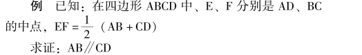
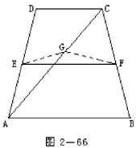
证明: (反证法)
假设AB 不平行CD.连结AC，取它的中点G，连结EG，FG.
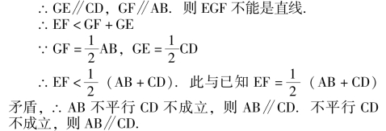
例 已知: 正方形ABCD 中有△CDE，CE ＝DE，∠ECD ＝∠EDC ＝15°.
求证: △EAB 是正三角形.
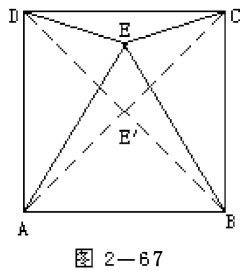
证明: (同一法)
在正方形ABCD 内作正三角形AE′B，连结DE′，CE′，
∵△BCE′是等腰三角形，∠CBE′＝90°－60°＝30°.
∴∠E′CD ＝90°－75°＝15°.
同理∠E′DC ＝15°
根据已知∠ECD ＝∠EDC ＝15°，∴E′与E 重合.
则△EAB 为正三角形.
说明: 同一法的证明，一般是先作出结论要求的条件，再证，它与已知条件一致.(同一，重合).
【综合法(顺证法)】
由已知经过推理证明结论这种由因导果的思考方法叫综合法.
如证明“若A 则D”，则从A 出发，朝D 前进如右图所示:
从A 可以得出B，B1，B2的结果，而B1又得出C1的结果；由B 得出C 和C2的结果；由B2得出C3，C4的结果；只有C 可得出D，而C1，C2，C3，C4都不能得出D，则思路是A⇒BC⇒D.
如果从C4可以得出D.A⇒B2⇒C4⇒D.则是另一种证明方法.
例 已知: ▱ABCD 中，M、N 分别是BC、AD 的中点，AM、CN 交BD 于E、F.
求证: BE ＝EF ＝FD
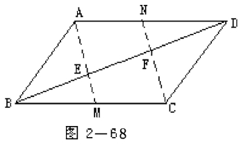
证明: (综合法思路).
顺证法是常用的证明表述方法.将思路按从上到下的顺序写出来就是证明的过程.那些接不通“求证” 的箭头就是思考中应放弃的方法(见第176 页图表所示).
【分析法(逆求法)】
由欲证明的结论出发，向已知条件回溯.这是先设想结论正确，追求它成立的原因，从这些原因中找出需要的条件.这种执果索因的方法就叫分析法，这种方法是逆求法.
例 已知: 四边形ABCD 内接于☉O，AC⊥BD 于F，OE⊥AB 于E.求证: ∠BAG ＝∠CAD
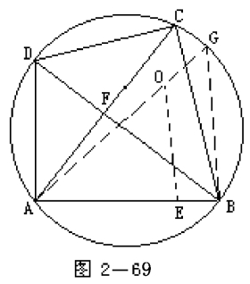
证明: (用分析法)
由OE⊥AB，知E 是AB 中点，若作直径AG，
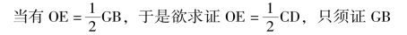
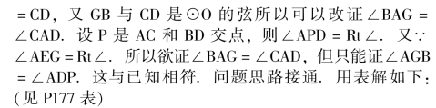
表中有些接不通的箭头说明上溯不能.
说明: 逆求与逆推是不同的.分析法是逆求而不是逆推.
例证明“若A 则D”.分析法是: 欲D 真，只须C 真；欲C 真只须B 真；欲B 真只须A 真，因A 真，故D 真.
而逆推则是: 若D 真则C 真；若C 真则B 真；若B 真则A 真.因为A 真则D 真.这显然是不正确的.
【演绎法】
由一般到特殊的推理方法.它是由“三段论” 组成.三段论是由具有一般性的大前提，与大前提有关的具体(特殊) 前提——小前提和结论组成.
几何中的证明本质是一系列地演绎推理.
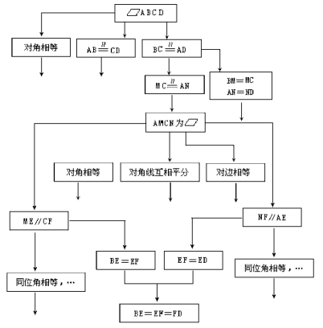
例 相交弦定理的证明如完整地写出这些推理应该是下面的证明.
已知: 如图2－69 弦AB、CD 交于P.
求证: PA·PB ＝PC·PD
证明: 连结AC，BD.
①∵同弧上的圆周角相等(大前提) ∴∠BAC 和∠BDC 是的圆周角(小前提)
∴∠BAC ＝∠BDC (结论)
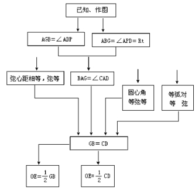
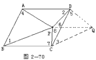
②∵对顶角相等(大前提)，∠APC 和∠DPB 是对顶角(小前提)
∴∠APC ＝∠DPB (结论)
③∵两组对角相等的三角形相似(大前提) ∠PAC ＝∠PDB，∠APC ＝∠DPB (小前提) ∴△PAC∽△PBD (结论)
④∵相似三角形对应边成比例(大前提) PA 与PD，PB 和PC 是对应边(小前提)
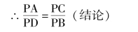
⑤∵比例内项积等于外项积(大前提) PA；PB 是外项，PC，PD 是内项(小前提) ∴PA·PB ＝PC·PD(结论)
【关于线段相等的证明方法】
1) 全等三角形的对应边相等；
2) 平行四边形对边相等，对角线互相平分；
3) 在一个三角形中，等角对等边；
4) 在同圆或等圆中弦等、弧等，弦心距等；
5) 线段垂直平分线上一点到线段两端距离相等；
6) 角平分线上一点到角两边的距离相等；
7) 垂直弦的直径平分弦；
8) 圆外一点向同一圆引的两条切线相等；
9) 比例中各比的前项相等时，则后项相等；
10) 等于同一线段的两线段相等；
11) 三角形中位线等于第三边的一半；
12) 直角三角形斜边上的中线等于斜边的一半；
13) 对30°角的直角边等于斜边的一半；
14) 三角形中线被重心分成2∶ 1 两部分；
15) 等腰梯形的对角线相等；
16) 矩形对角线相等；
17) 正方形对角线相等.
……
例 已知: △ABC 中AB ＝AC，CF ＝BE 如图2 －71 求证: DE ＝DF
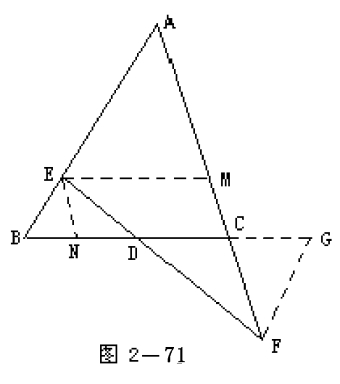
证明(一) 提示: 作EN∥AC 交BC 于N，证明△CDF≌△DEN
证明(二) 提示: 作EM∥BC 交AC 于M，证明CM ＝CF
证明(三) 提示: 作GF∥AB 交BC 延长线于G，证明△BDE≌△DFG1
例 已知: 如图2 －72，AC ＝BD.M，N 分别是AD，BC 中点.
求证: EF ＝EG
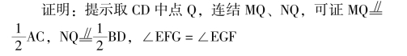
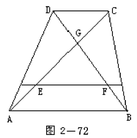
例 已知: 如图2－73 梯形ABCD 中AB∥CDMN∥AB求证: ME ＝FN
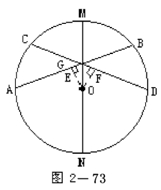
证明: 提示
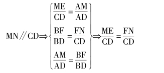
例 已知: ☉O 中直径MN 平分∠AED
求证: AB ＝CD
证明: 提示作OG⊥AB，OF⊥CD 证明OG ＝OF
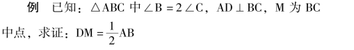
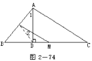
证明: 提示取AB 中点N，连结DN，MN.∠1 ＝∠B，∠1 ＝∠2 ＋∠3，∠2 ＝∠3DM ＝DN
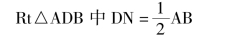
【证明角相等】
1) 全等三角形对应角相等；
2) 在同一三角形中等边对等角(等腰三角形底角相等)；
3) 平行线的同位角相等，内错角相等；
4) 平行四边形、矩形、菱形、正方形对角相等；
5) 同角的余角相等，同角的补角相等；
6) 同弧上的圆心角相等；圆周角相等；弦切角相等；
7) 相似三角形的对应角相等；
8) 等于同一角的两个角相等；
9) 圆内接四边形的外角等于内对角；
10) 菱形、正方形对角线平分内角；
11) 等腰梯形同一底上的两角相等.
……
例 已知: 如图2 －75DE 平分∠BAC 的外角，BD⊥DE，CE⊥DE
求证: ∠1 ＝∠2
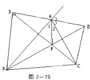
证明: 提示证AF⊥DE
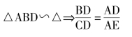
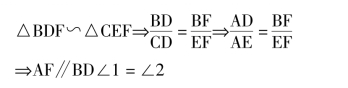
【证两直线平行】
常用的方法:
①平行同一直线的两直线平行；
②在同一平面内垂直同一直线的两直线平行；
③同位角相等两直线平行，内错角相等两直线平行，同旁内角互补两直线平行；
④三角形中位线平行第三边；
⑤平行四边形对边平行；
⑥梯形中位线平行两底；
⑦如果一条直线截三角形的两边，其中一边上截得的一条线段和这边与另一边上截得的对应线段和另一边成比例，那么，这条直线平行于第三边；
⑧如果一条直线截三角形的两边所得的对应线段成比例，那么这条直线平行于三角形的第三边；
⑨位似形的对应边平行；
【证明两直线互相垂直】
常用的方法:
①邻补角的两角平分线互相垂直；
②在一个三角形中有两个角互余，另一角是直角；③等腰三角形顶角的平分线是底边上的中线和高(垂直底边)；
④半圆上的(直径上的) 圆周角是直角；
⑤菱形对角线互相垂直；
⑥正方形对角线互相垂直；
⑦平分弦的直径垂直弦；
⑧一直线垂直平行线中的一条直线，也垂直另一条直线；
【证明两三角形全等】
①两边夹角相等两三角形全等.
②两角夹边相等两三角形全等.
③两角一对边相等两三角形全等.
④三边相等两三角形全等.
⑤斜边、直角边相等两直角三角形全等.
【证明两三角形相似】
①两角相等的两三角形相似.
②一角相等夹边成比例的两三角形相似.
③平行线截一三角形两边所成三角形与原三角形相似.
④直角三角形斜边上高分三角形与原三角形相似.
【证等比或等积】
常用的方法:
①相似三角形对应边成比例；
②平行线分线段成比例定理: 三条平行线截两条直线，所得的对应线段成比例；
③三角形内角平分线定理: 三角形的内角平分线分对边所得的两条线段和这个角的两边对应成比例；
④三角形外角平分线定理: 如果三角形的外角平分线外分对边成两条线段，那么这两条线段和相邻的两边应成比例；
⑤射影定理: 直角三角形斜边上的高是两直角边在斜边上的射影的比例中项，每条直角边是斜边和它在斜边上射影的比例中项；⑥相交弦定理: 圆内的两条相交弦，被交点分成的两条线段长的积相等；
⑦切割线定理: 从圆外一点引圆的切线和割线，切线长是这点到割线与圆交点的两条线段长的比例中项；
⑧割线定理: 从圆外一点引圆的两条割线，这一点到每条割线与圆的交点的两条线段长的积相等；
【中线问题】
1) 延长中线等于它的二倍
目的: 夹角移在同一三角形内，邻边移至一个三角形中.如图2－76AD 是BC 边上中线，延长AD 至E，使DE＝AD 则CE ＝AB，∠E ＝∠1
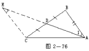
2) 过中点作直线平行于一边.
目的: 移角，出现相似三角形.形成中位线
如图2 －77∠1 ＝∠2，△AME∽△ABC，AE ＝EC (E为AC 中点)，EM 为中位线.
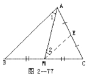
3) 过一顶点作中线的平行线.
目的: 移角出现相似三角形.
如图2－78CF ＝2AM，AB ＝AF，△CFB∽△ABM
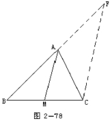
已知: AM 是△ABC 的中线，CD ＝2AD (图2－79)
求证: BO ＝3DO
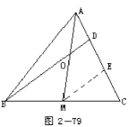
证明: 提示作ME∥BD 交AC 于E
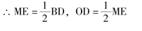
【角平分线问题】
1) 延长角的短边等于角的长边
目的: 使三角形的外角与一内对角在同一三角形内，使三角形的第三边折成二段构成三角形的两边。
如图2 － 80 延长AB 至E，使AE ＝AC，△ADE ≌△ADC，DE ＝DC，∠E ＝∠C
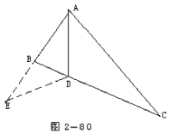
2) 在这个角的长边上截取线段等于短边
目的: 造成全等三角形。如图2－81 截取AE ＝AC，连结DE，△ADC≌△ADECD ＝DE
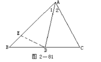
例 已知: 如图2 －82，AD 为△ABC 的中线，∠ADB和∠ADC 的平分线交AB，AC 于E、F，
求证: BE ＋CF>EF
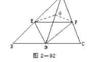
证明: 提示
在AD 上截DG ＝BD ＝CD 连结EG、FG△BDE≌△DEG∴BE ＝EG
【证明两倍的线段】
如证a ＝2b
1) 平分线段a，证其中一段与b 相等，
2) 找一个以a 为边的三角形，再连其它两边中点，找出中位线证它与b 相等.或找一个以b 为边的三角形，延长其它两边，与原边相等，找出2b，证它与a 相等.
例 已知: △ABC 中∠C ＝2∠BM 为BC 中点AD⊥BC求证: 2DM ＝AC
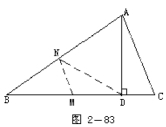
证明: 提示
∠BAD ＝∠C，BN ＝DN
例 已知: △ABC 的外心为O，垂心为HOD⊥BC
求证: AH ＝2DO
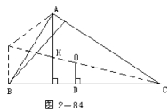
证明: 提示延长CO 至F，令CO ＝OF 则OD∥BF
BF ＝2DO 再证AFBH 为平行四边形
【梯形问题】
1) 过顶点作直线平行一腰如图2－85；
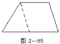
2) 过顶点作直线平行一条对角线图2－86
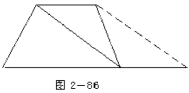
3) 作梯形的高如图2－87
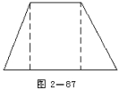
【弦的问题】
由圆心作弦的垂线
目的: 平分弦
例 已知: ☉O 直径AB，CD 为弦AP⊥CD，BQ⊥CD
求证: OP ＝OQ
证明: 提示作OM⊥PQ 于M，OM∥PA∥BQ，AO ＝BO
∴PM ＝MQOM 是PQ 的垂直平分线.
【线分比值】
1) 过三角形边上的分点作直线平行于一边，如图2 －91，目的作出三角形与原三角形相似.
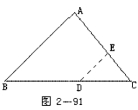
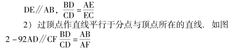
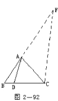
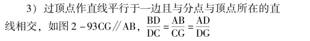
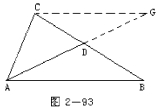
【平方差问题】
三角形二边的平方差，常由顶点作底边的垂线.目的:把不在同一直线上的两线段平方差转化成同一直线上两线段的平方差.
用a2－b2＝ (a ＋b) (a－b) 在图上去找.
【证线段的乘积】
三角形一边内分或外分的两线段之积的题，常作三角形的外接圆.
目的1) 转化为相交弦定理.
2) 转化为割线定理.
例 已知: AD 是△ABC 的∠BAC 平分线，如图2 －94.
求证: AB·AC ＝BD·DC ＋AD2
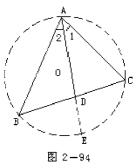
证明: 提示作△ABC 的外接圆☉O，延长AD 交☉0 于E，
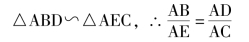
例 已知: AB 是直径AC.BD 两弦交于E，如图2 －95.
求证: AB2 ＝AE·AC ＋BE·BD.
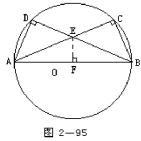
证明: 提示
连结AD、BC，作EF⊥AB.
∵ADEF 是圆内接四边形，
∴BE·BD ＝BF·AB，∵B、C、E、F 是圆内接四边形:
∴AE·AC ＝AF·AB 两式相加得AE·AC ＋BE·BD ＝(AF ＋BF) ·AB ＝AB2
说明: 做辅助线的目的是为了创造条件应用有关的定理.如何做辅助线，只是将常用的方法加以介绍，不可能包罗万象.更不能死记硬背.只有平时定理熟悉，到用时才会产生联想，为了把辅助线作好，要在平时提高分析和解题能力.